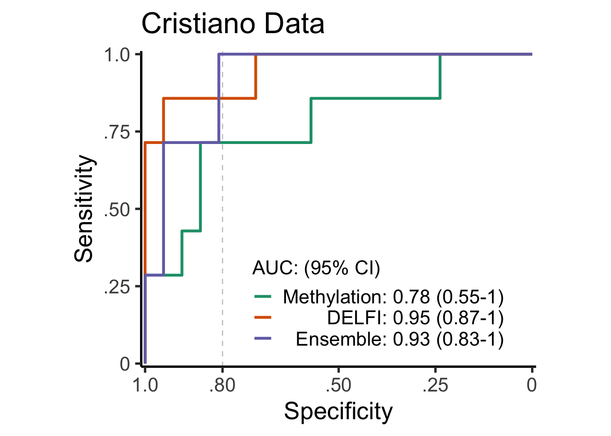

Last updated: 2024-01-30
Checks: 6 1
Knit directory: noe2024/
This reproducible R Markdown analysis was created with workflowr (version 1.7.1). The Checks tab describes the reproducibility checks that were applied when the results were created. The Past versions tab lists the development history.
The R Markdown is untracked by Git. To know which version of the R
Markdown file created these results, you’ll want to first commit it to
the Git repo. If you’re still working on the analysis, you can ignore
this warning. When you’re finished, you can run
wflow_publish to commit the R Markdown file and build the
HTML.
Great job! The global environment was empty. Objects defined in the global environment can affect the analysis in your R Markdown file in unknown ways. For reproduciblity it’s best to always run the code in an empty environment.
The command set.seed(20240129) was run prior to running
the code in the R Markdown file. Setting a seed ensures that any results
that rely on randomness, e.g. subsampling or permutations, are
reproducible.
Great job! Recording the operating system, R version, and package versions is critical for reproducibility.
Nice! There were no cached chunks for this analysis, so you can be confident that you successfully produced the results during this run.
Great job! Using relative paths to the files within your workflowr project makes it easier to run your code on other machines.
Great! You are using Git for version control. Tracking code development and connecting the code version to the results is critical for reproducibility.
The results in this page were generated with repository version c3db0ae. See the Past versions tab to see a history of the changes made to the R Markdown and HTML files.
Note that you need to be careful to ensure that all relevant files for
the analysis have been committed to Git prior to generating the results
(you can use wflow_publish or
wflow_git_commit). workflowr only checks the R Markdown
file, but you know if there are other scripts or data files that it
depends on. Below is the status of the Git repository when the results
were generated:
Untracked files:
Untracked: analysis/Figure1.Rmd
Untracked: analysis/Figure2.Rmd
Untracked: analysis/Figure3.Rmd
Untracked: analysis/Figure4.Rmd
Untracked: analysis/Figure4C.Rmd
Untracked: analysis/SessionInfo.Rmd
Untracked: data/Moss_ratios.rds
Untracked: data/RNAtable.tsv.gz
Untracked: data/carvalho_motifs.rds
Untracked: data/cdf_multiple.rds
Untracked: data/cfdna_ratio_motif.rds
Untracked: data/cpgIslands.hg19.20001.rds
Untracked: data/cpg_size_smallfragments.rds
Untracked: data/cpg_smallfragments.rds
Untracked: data/data_akshaya/
Untracked: data/end_motifs_cfdna_individual.rds
Untracked: data/end_motifs_cfdna_individual_200over_5perc.rds
Untracked: data/end_motifs_sheared_individual.rds
Untracked: data/fragments_somatic.rds
Untracked: data/labels.txt
Untracked: data/multivariate_model_coverage_size.rds
Untracked: data/position_in_read.rds
Untracked: data/positons_conserved_200over_5perc.rds
Untracked: data/som_chrx.rds
Untracked: data/theoretical_frequencies_hg19.rds
Untracked: data/tissue_key.tsv
Untracked: data/transcriptAnno-GRCh37.75.tss20001.tsv
Untracked: data/tss_size_smallfragments.rds
Untracked: data/tss_smallfragments.rds
Untracked: output/All_Scores.csv
Untracked: output/fold10_ens.csv
Untracked: output/needtodrop.csv
Unstaged changes:
Modified: analysis/index.Rmd
Note that any generated files, e.g. HTML, png, CSS, etc., are not included in this status report because it is ok for generated content to have uncommitted changes.
There are no past versions. Publish this analysis with
wflow_publish() to start tracking its development.
Read in Libraries
Import all data and format metadata
aa_data <- "data/data_akshaya"
delfi<- read_csv(here(aa_data,"Cristiano-training-set-full.csv")) Rows: 398 Columns: 1461
── Column specification ────────────────────────────────────────────────────────
Delimiter: ","
chr (3): id, type, Tumor_Type
dbl (1458): zscore_1p, zscore_1q, zscore_2p, zscore_2q, zscore_3p, zscore_3q...
ℹ Use `spec()` to retrieve the full column specification for this data.
ℹ Specify the column types or set `show_col_types = FALSE` to quiet this message.meth<-readRDS(here(aa_data,"output_ML.rds"))
#meth_old<-readRDS("../Cristiano/output_ML.rds")
#meth<-meth %>% dplyr::select(sample,class,class_group,contains("regular"))
meth<-meth %>% filter(sample %in% delfi$id) #Need to get rid of some LUCAS and D/C healthies that are in here
meth<-meth %>% filter(class_group=="CGPLH"|class_group=="CGPLPA")
meth<-meth %>% dplyr::select(-class) %>% dplyr::rename("type"="class_group")
meth<-meth %>% mutate(type=if_else(type=="CGPLH","healthy","cancer"))
data<-inner_join(delfi %>% dplyr::select(-type,-Tumor_Type),meth,by=c("id"="sample"))
#delfi<-inner_join(delfi %>% select(-type,-Tumor_Type),meth %>% select(sample,type),by=c("id"="sample"))
delfi<-delfi %>% dplyr::select(-Tumor_Type)#Now work on the ensembles! #10 fold – leave the test set out each time, you have to manually run it for each of 10 times (the 5 cells below) #fold01 - 09, fold10
library(splitTools)
set.seed(1234)
train_folds<-create_folds(meth$type,k=10)
train_IDs<-meth$sample[train_folds$Fold10]
test_IDs<-meth$sample[-train_folds$Fold10]
name<-"output/fold10_ens.csv"#train meth GBM 5x1 on train set and save CV #train DELFI LR 5x1 on train set and save CV #Of note, we are spiking in the Cristiano cancers of other types as extra training data #use CV preds to train ensemble
#predict DELFI and Meth on test set #predict ensemble on test set
set.seed(1234)
meth_data_train<-meth %>% filter(sample %in% train_IDs)
meth_data_test<-meth %>% filter(sample %in% test_IDs)
recipe_meth <- recipe(type ~ ., data=meth_data_train) %>%
update_role(sample, new_role = "ID") %>%
step_corr(all_predictors(), threshold=0.95) %>%
step_nzv(all_predictors())
set.seed(1234)
ctrl_meth <- trainControl(method = "repeatedcv",
number = 5,
repeats = 1,
verboseIter = TRUE,
savePredictions="final",
classProbs=TRUE,
index=createMultiFolds(meth_data_train$type, 5, 1),
summaryFunction = twoClassSummary)
set.seed(1234)
model_meth <- caret::train(recipe_meth,
data = meth_data_train,
method = "gbm",
trControl = ctrl_meth)Loading required namespace: gbmPreparing recipeWarning in train.recipe(recipe_meth, data = meth_data_train, method = "gbm", :
The metric "Accuracy" was not in the result set. ROC will be used instead.Loaded gbm 2.1.9This version of gbm is no longer under development. Consider transitioning to gbm3, https://github.com/gbm-developers/gbm3+ Fold1.Rep1: shrinkage=0.1, interaction.depth=1, n.minobsinnode=10, n.trees=150
Iter TrainDeviance ValidDeviance StepSize Improve
1 0.9647 nan 0.1000 0.0522
2 0.9019 nan 0.1000 0.0283
3 0.8547 nan 0.1000 0.0193
4 0.8160 nan 0.1000 0.0156
5 0.7958 nan 0.1000 -0.0033
6 0.7494 nan 0.1000 0.0202
7 0.7230 nan 0.1000 0.0099
8 0.6951 nan 0.1000 0.0120
9 0.6630 nan 0.1000 0.0133
10 0.6423 nan 0.1000 0.0061
20 0.4976 nan 0.1000 0.0023
40 0.3723 nan 0.1000 -0.0006
60 0.2955 nan 0.1000 -0.0032
80 0.2509 nan 0.1000 -0.0023
100 0.2066 nan 0.1000 -0.0007
120 0.1810 nan 0.1000 -0.0008
140 0.1532 nan 0.1000 -0.0009
150 0.1407 nan 0.1000 0.0001
- Fold1.Rep1: shrinkage=0.1, interaction.depth=1, n.minobsinnode=10, n.trees=150
+ Fold1.Rep1: shrinkage=0.1, interaction.depth=2, n.minobsinnode=10, n.trees=150
Iter TrainDeviance ValidDeviance StepSize Improve
1 0.9616 nan 0.1000 0.0491
2 0.8739 nan 0.1000 0.0386
3 0.8117 nan 0.1000 0.0261
4 0.7716 nan 0.1000 0.0148
5 0.7277 nan 0.1000 0.0156
6 0.6882 nan 0.1000 0.0195
7 0.6594 nan 0.1000 0.0092
8 0.6298 nan 0.1000 0.0111
9 0.6031 nan 0.1000 0.0065
10 0.5846 nan 0.1000 0.0013
20 0.4203 nan 0.1000 0.0028
40 0.2699 nan 0.1000 -0.0038
60 0.1762 nan 0.1000 -0.0000
80 0.1248 nan 0.1000 -0.0010
100 0.0930 nan 0.1000 -0.0009
120 0.0654 nan 0.1000 -0.0003
140 0.0477 nan 0.1000 -0.0004
150 0.0416 nan 0.1000 -0.0007
- Fold1.Rep1: shrinkage=0.1, interaction.depth=2, n.minobsinnode=10, n.trees=150
+ Fold1.Rep1: shrinkage=0.1, interaction.depth=3, n.minobsinnode=10, n.trees=150
Iter TrainDeviance ValidDeviance StepSize Improve
1 0.9463 nan 0.1000 0.0449
2 0.8533 nan 0.1000 0.0437
3 0.7973 nan 0.1000 0.0215
4 0.7495 nan 0.1000 0.0161
5 0.7111 nan 0.1000 0.0132
6 0.6630 nan 0.1000 0.0173
7 0.6250 nan 0.1000 0.0085
8 0.5935 nan 0.1000 0.0108
9 0.5604 nan 0.1000 0.0127
10 0.5356 nan 0.1000 0.0057
20 0.3721 nan 0.1000 0.0022
40 0.2019 nan 0.1000 -0.0025
60 0.1246 nan 0.1000 -0.0002
80 0.0820 nan 0.1000 -0.0011
100 0.0566 nan 0.1000 -0.0014
120 0.0368 nan 0.1000 -0.0003
140 0.0241 nan 0.1000 -0.0005
150 0.0199 nan 0.1000 -0.0003
- Fold1.Rep1: shrinkage=0.1, interaction.depth=3, n.minobsinnode=10, n.trees=150
+ Fold2.Rep1: shrinkage=0.1, interaction.depth=1, n.minobsinnode=10, n.trees=150
Iter TrainDeviance ValidDeviance StepSize Improve
1 0.9585 nan 0.1000 0.0380
2 0.8821 nan 0.1000 0.0390
3 0.8267 nan 0.1000 0.0272
4 0.7894 nan 0.1000 0.0198
5 0.7540 nan 0.1000 0.0131
6 0.7156 nan 0.1000 0.0132
7 0.6890 nan 0.1000 0.0108
8 0.6672 nan 0.1000 0.0095
9 0.6449 nan 0.1000 0.0097
10 0.6276 nan 0.1000 0.0033
20 0.5084 nan 0.1000 -0.0012
40 0.3831 nan 0.1000 -0.0018
60 0.3089 nan 0.1000 0.0003
80 0.2523 nan 0.1000 -0.0009
100 0.2052 nan 0.1000 -0.0009
120 0.1766 nan 0.1000 -0.0010
140 0.1532 nan 0.1000 -0.0015
150 0.1423 nan 0.1000 -0.0000
- Fold2.Rep1: shrinkage=0.1, interaction.depth=1, n.minobsinnode=10, n.trees=150
+ Fold2.Rep1: shrinkage=0.1, interaction.depth=2, n.minobsinnode=10, n.trees=150
Iter TrainDeviance ValidDeviance StepSize Improve
1 0.9605 nan 0.1000 0.0311
2 0.8795 nan 0.1000 0.0316
3 0.8214 nan 0.1000 0.0222
4 0.7660 nan 0.1000 0.0184
5 0.7212 nan 0.1000 0.0216
6 0.6782 nan 0.1000 0.0174
7 0.6423 nan 0.1000 0.0101
8 0.6139 nan 0.1000 0.0107
9 0.5877 nan 0.1000 0.0048
10 0.5712 nan 0.1000 0.0038
20 0.4266 nan 0.1000 -0.0019
40 0.2667 nan 0.1000 -0.0004
60 0.1796 nan 0.1000 -0.0021
80 0.1287 nan 0.1000 -0.0017
100 0.0873 nan 0.1000 -0.0002
120 0.0646 nan 0.1000 -0.0002
140 0.0466 nan 0.1000 -0.0007
150 0.0407 nan 0.1000 -0.0004
- Fold2.Rep1: shrinkage=0.1, interaction.depth=2, n.minobsinnode=10, n.trees=150
+ Fold2.Rep1: shrinkage=0.1, interaction.depth=3, n.minobsinnode=10, n.trees=150
Iter TrainDeviance ValidDeviance StepSize Improve
1 0.9746 nan 0.1000 0.0161
2 0.8880 nan 0.1000 0.0465
3 0.8180 nan 0.1000 0.0273
4 0.7549 nan 0.1000 0.0251
5 0.7034 nan 0.1000 0.0161
6 0.6653 nan 0.1000 0.0155
7 0.6284 nan 0.1000 0.0104
8 0.5947 nan 0.1000 0.0115
9 0.5794 nan 0.1000 -0.0019
10 0.5570 nan 0.1000 0.0027
20 0.3802 nan 0.1000 0.0020
40 0.2116 nan 0.1000 -0.0021
60 0.1371 nan 0.1000 -0.0029
80 0.0782 nan 0.1000 -0.0008
100 0.0502 nan 0.1000 0.0002
120 0.0314 nan 0.1000 -0.0001
140 0.0217 nan 0.1000 -0.0002
150 0.0175 nan 0.1000 -0.0001
- Fold2.Rep1: shrinkage=0.1, interaction.depth=3, n.minobsinnode=10, n.trees=150
+ Fold3.Rep1: shrinkage=0.1, interaction.depth=1, n.minobsinnode=10, n.trees=150
Iter TrainDeviance ValidDeviance StepSize Improve
1 0.9717 nan 0.1000 0.0315
2 0.9150 nan 0.1000 0.0273
3 0.8615 nan 0.1000 0.0216
4 0.8072 nan 0.1000 0.0244
5 0.7656 nan 0.1000 0.0181
6 0.7229 nan 0.1000 0.0119
7 0.6943 nan 0.1000 0.0126
8 0.6756 nan 0.1000 0.0036
9 0.6570 nan 0.1000 0.0041
10 0.6325 nan 0.1000 0.0114
20 0.5054 nan 0.1000 0.0025
40 0.3736 nan 0.1000 -0.0041
60 0.3097 nan 0.1000 -0.0020
80 0.2468 nan 0.1000 -0.0008
100 0.2054 nan 0.1000 -0.0024
120 0.1726 nan 0.1000 -0.0034
140 0.1525 nan 0.1000 -0.0021
150 0.1417 nan 0.1000 -0.0017
- Fold3.Rep1: shrinkage=0.1, interaction.depth=1, n.minobsinnode=10, n.trees=150
+ Fold3.Rep1: shrinkage=0.1, interaction.depth=2, n.minobsinnode=10, n.trees=150
Iter TrainDeviance ValidDeviance StepSize Improve
1 0.9627 nan 0.1000 0.0367
2 0.8789 nan 0.1000 0.0391
3 0.8158 nan 0.1000 0.0246
4 0.7529 nan 0.1000 0.0192
5 0.7172 nan 0.1000 0.0073
6 0.6760 nan 0.1000 0.0133
7 0.6393 nan 0.1000 0.0152
8 0.6074 nan 0.1000 0.0134
9 0.5801 nan 0.1000 0.0095
10 0.5486 nan 0.1000 0.0126
20 0.3955 nan 0.1000 0.0019
40 0.2401 nan 0.1000 -0.0008
60 0.1645 nan 0.1000 -0.0003
80 0.1169 nan 0.1000 -0.0008
100 0.0950 nan 0.1000 -0.0018
120 0.0655 nan 0.1000 -0.0004
140 0.0483 nan 0.1000 -0.0008
150 0.0420 nan 0.1000 -0.0007
- Fold3.Rep1: shrinkage=0.1, interaction.depth=2, n.minobsinnode=10, n.trees=150
+ Fold3.Rep1: shrinkage=0.1, interaction.depth=3, n.minobsinnode=10, n.trees=150
Iter TrainDeviance ValidDeviance StepSize Improve
1 0.9260 nan 0.1000 0.0548
2 0.8605 nan 0.1000 0.0220
3 0.8000 nan 0.1000 0.0191
4 0.7494 nan 0.1000 0.0205
5 0.6970 nan 0.1000 0.0207
6 0.6445 nan 0.1000 0.0188
7 0.6056 nan 0.1000 0.0137
8 0.5663 nan 0.1000 0.0116
9 0.5363 nan 0.1000 0.0097
10 0.5112 nan 0.1000 0.0063
20 0.3397 nan 0.1000 0.0016
40 0.2019 nan 0.1000 -0.0028
60 0.1147 nan 0.1000 -0.0005
80 0.0745 nan 0.1000 0.0003
100 0.0493 nan 0.1000 0.0001
120 0.0345 nan 0.1000 -0.0004
140 0.0236 nan 0.1000 -0.0004
150 0.0186 nan 0.1000 -0.0003
- Fold3.Rep1: shrinkage=0.1, interaction.depth=3, n.minobsinnode=10, n.trees=150
+ Fold4.Rep1: shrinkage=0.1, interaction.depth=1, n.minobsinnode=10, n.trees=150
Iter TrainDeviance ValidDeviance StepSize Improve
1 0.9350 nan 0.1000 0.0547
2 0.8613 nan 0.1000 0.0367
3 0.7842 nan 0.1000 0.0326
4 0.7240 nan 0.1000 0.0266
5 0.6860 nan 0.1000 0.0145
6 0.6480 nan 0.1000 0.0188
7 0.6189 nan 0.1000 0.0114
8 0.5859 nan 0.1000 0.0129
9 0.5619 nan 0.1000 0.0117
10 0.5424 nan 0.1000 0.0080
20 0.4121 nan 0.1000 0.0001
40 0.2974 nan 0.1000 -0.0024
60 0.2302 nan 0.1000 -0.0043
80 0.1749 nan 0.1000 -0.0011
100 0.1352 nan 0.1000 -0.0012
120 0.1100 nan 0.1000 -0.0013
140 0.0862 nan 0.1000 0.0003
150 0.0782 nan 0.1000 -0.0006
- Fold4.Rep1: shrinkage=0.1, interaction.depth=1, n.minobsinnode=10, n.trees=150
+ Fold4.Rep1: shrinkage=0.1, interaction.depth=2, n.minobsinnode=10, n.trees=150
Iter TrainDeviance ValidDeviance StepSize Improve
1 0.9123 nan 0.1000 0.0674
2 0.8227 nan 0.1000 0.0384
3 0.7603 nan 0.1000 0.0255
4 0.7130 nan 0.1000 0.0181
5 0.6635 nan 0.1000 0.0189
6 0.6226 nan 0.1000 0.0156
7 0.5904 nan 0.1000 0.0121
8 0.5620 nan 0.1000 0.0078
9 0.5353 nan 0.1000 0.0065
10 0.5100 nan 0.1000 0.0062
20 0.3518 nan 0.1000 0.0021
40 0.2097 nan 0.1000 -0.0023
60 0.1306 nan 0.1000 -0.0005
80 0.0865 nan 0.1000 -0.0004
100 0.0570 nan 0.1000 -0.0008
120 0.0401 nan 0.1000 0.0000
140 0.0282 nan 0.1000 -0.0000
150 0.0232 nan 0.1000 -0.0002
- Fold4.Rep1: shrinkage=0.1, interaction.depth=2, n.minobsinnode=10, n.trees=150
+ Fold4.Rep1: shrinkage=0.1, interaction.depth=3, n.minobsinnode=10, n.trees=150
Iter TrainDeviance ValidDeviance StepSize Improve
1 0.9299 nan 0.1000 0.0466
2 0.8253 nan 0.1000 0.0417
3 0.7538 nan 0.1000 0.0313
4 0.6960 nan 0.1000 0.0203
5 0.6478 nan 0.1000 0.0190
6 0.5945 nan 0.1000 0.0175
7 0.5571 nan 0.1000 0.0129
8 0.5214 nan 0.1000 0.0102
9 0.5003 nan 0.1000 0.0033
10 0.4698 nan 0.1000 0.0063
20 0.3015 nan 0.1000 0.0016
40 0.1675 nan 0.1000 -0.0021
60 0.0943 nan 0.1000 -0.0007
80 0.0510 nan 0.1000 -0.0005
100 0.0323 nan 0.1000 -0.0005
120 0.0212 nan 0.1000 -0.0003
140 0.0140 nan 0.1000 -0.0003
150 0.0115 nan 0.1000 -0.0001
- Fold4.Rep1: shrinkage=0.1, interaction.depth=3, n.minobsinnode=10, n.trees=150
+ Fold5.Rep1: shrinkage=0.1, interaction.depth=1, n.minobsinnode=10, n.trees=150
Iter TrainDeviance ValidDeviance StepSize Improve
1 0.9448 nan 0.1000 0.0590
2 0.8729 nan 0.1000 0.0381
3 0.8144 nan 0.1000 0.0269
4 0.7624 nan 0.1000 0.0234
5 0.7157 nan 0.1000 0.0162
6 0.6777 nan 0.1000 0.0145
7 0.6456 nan 0.1000 0.0133
8 0.6203 nan 0.1000 0.0089
9 0.6014 nan 0.1000 0.0065
10 0.5840 nan 0.1000 0.0048
20 0.4621 nan 0.1000 0.0031
40 0.3277 nan 0.1000 -0.0002
60 0.2591 nan 0.1000 -0.0014
80 0.2079 nan 0.1000 -0.0011
100 0.1659 nan 0.1000 -0.0020
120 0.1432 nan 0.1000 -0.0025
140 0.1162 nan 0.1000 -0.0003
150 0.1077 nan 0.1000 -0.0005
- Fold5.Rep1: shrinkage=0.1, interaction.depth=1, n.minobsinnode=10, n.trees=150
+ Fold5.Rep1: shrinkage=0.1, interaction.depth=2, n.minobsinnode=10, n.trees=150
Iter TrainDeviance ValidDeviance StepSize Improve
1 0.9272 nan 0.1000 0.0491
2 0.8537 nan 0.1000 0.0345
3 0.7882 nan 0.1000 0.0295
4 0.7379 nan 0.1000 0.0145
5 0.6873 nan 0.1000 0.0211
6 0.6420 nan 0.1000 0.0187
7 0.6119 nan 0.1000 0.0114
8 0.5762 nan 0.1000 0.0123
9 0.5485 nan 0.1000 0.0080
10 0.5196 nan 0.1000 0.0100
20 0.3627 nan 0.1000 0.0002
40 0.2174 nan 0.1000 -0.0026
60 0.1442 nan 0.1000 -0.0013
80 0.0974 nan 0.1000 -0.0005
100 0.0676 nan 0.1000 -0.0002
120 0.0489 nan 0.1000 -0.0002
140 0.0365 nan 0.1000 -0.0002
150 0.0316 nan 0.1000 -0.0004
- Fold5.Rep1: shrinkage=0.1, interaction.depth=2, n.minobsinnode=10, n.trees=150
+ Fold5.Rep1: shrinkage=0.1, interaction.depth=3, n.minobsinnode=10, n.trees=150
Iter TrainDeviance ValidDeviance StepSize Improve
1 0.9388 nan 0.1000 0.0437
2 0.8373 nan 0.1000 0.0377
3 0.7672 nan 0.1000 0.0319
4 0.7126 nan 0.1000 0.0248
5 0.6718 nan 0.1000 0.0070
6 0.6304 nan 0.1000 0.0133
7 0.5864 nan 0.1000 0.0162
8 0.5562 nan 0.1000 0.0108
9 0.5278 nan 0.1000 0.0100
10 0.5090 nan 0.1000 0.0029
20 0.3402 nan 0.1000 0.0022
40 0.1681 nan 0.1000 -0.0010
60 0.1048 nan 0.1000 -0.0012
80 0.0667 nan 0.1000 -0.0003
100 0.0458 nan 0.1000 0.0004
120 0.0305 nan 0.1000 -0.0007
140 0.0205 nan 0.1000 -0.0004
150 0.0167 nan 0.1000 -0.0004
- Fold5.Rep1: shrinkage=0.1, interaction.depth=3, n.minobsinnode=10, n.trees=150
Aggregating results
Selecting tuning parameters
Fitting n.trees = 100, interaction.depth = 1, shrinkage = 0.1, n.minobsinnode = 10 on full training set
Iter TrainDeviance ValidDeviance StepSize Improve
1 0.9621 nan 0.1000 0.0456
2 0.8815 nan 0.1000 0.0364
3 0.8329 nan 0.1000 0.0227
4 0.7985 nan 0.1000 0.0075
5 0.7582 nan 0.1000 0.0183
6 0.7214 nan 0.1000 0.0124
7 0.7022 nan 0.1000 0.0021
8 0.6748 nan 0.1000 0.0075
9 0.6479 nan 0.1000 0.0077
10 0.6205 nan 0.1000 0.0108
20 0.4980 nan 0.1000 -0.0025
40 0.3764 nan 0.1000 0.0002
60 0.3114 nan 0.1000 0.0002
80 0.2635 nan 0.1000 -0.0025
100 0.2252 nan 0.1000 -0.0000#############
delfi_data_train<-delfi %>% filter(!id %in% test_IDs)
delfi_data_test<-delfi %>% filter(id %in% test_IDs)
recipe_delfi <- recipe(type ~ ., data=delfi_data_train) %>%
update_role(id, new_role = "ID") %>%
step_rm(starts_with("ratio"),starts_with("short")) %>%
step_pca(starts_with("cov"), prefix = "cov_pc_", threshold=0.90) %>%
step_corr(all_predictors(), threshold=0.95) %>%
step_nzv(all_predictors())
glmnetGrid <- expand.grid(
alpha = 1,
lambda = 10^seq(-5, -1, length.out = 100))
#### Train models
set.seed(1234)
ctrl_delfi <- trainControl(method = "repeatedcv",
number = 5,
repeats = 1,
verboseIter = TRUE,
savePredictions="final",
classProbs=TRUE,
index=createMultiFolds(delfi_data_train$type, 5, 1),
summaryFunction = twoClassSummary)
set.seed(1234)
model_delfi <- caret::train(recipe_delfi,
data = delfi_data_train,
method = "glmnet",
tuneGrid = glmnetGrid,
trControl = ctrl_delfi)Loading required namespace: glmnetPreparing recipeWarning in train.recipe(recipe_delfi, data = delfi_data_train, method =
"glmnet", : The metric "Accuracy" was not in the result set. ROC will be used
instead.Loading required package: Matrix
Attaching package: 'Matrix'The following objects are masked from 'package:tidyr':
expand, pack, unpackLoaded glmnet 4.1-8+ Fold1.Rep1: alpha=1, lambda=0.1
- Fold1.Rep1: alpha=1, lambda=0.1
+ Fold2.Rep1: alpha=1, lambda=0.1
- Fold2.Rep1: alpha=1, lambda=0.1
+ Fold3.Rep1: alpha=1, lambda=0.1
- Fold3.Rep1: alpha=1, lambda=0.1
+ Fold4.Rep1: alpha=1, lambda=0.1
- Fold4.Rep1: alpha=1, lambda=0.1
+ Fold5.Rep1: alpha=1, lambda=0.1
- Fold5.Rep1: alpha=1, lambda=0.1
Aggregating results
Selecting tuning parameters
Fitting alpha = 1, lambda = 0.00201 on full training set##########
pred.all <- model_meth$pred
pred.all <- pred.all %>% dplyr::group_by(rowIndex) %>% dplyr::summarize(score.meth = mean(cancer))
all_data <- meth_data_train %>% dplyr::mutate(rowIndex = 1:n())
labels <- all_data %>% dplyr::select(type,sample,rowIndex)
preds_all <- dplyr::inner_join(labels, pred.all, by="rowIndex")
pred.all <- model_delfi$pred
pred.all <- pred.all %>% dplyr::group_by(rowIndex) %>% dplyr::summarize(score.delfi = mean(cancer))
all_data <- delfi_data_train %>% dplyr::mutate(rowIndex = 1:n())
labels <- all_data %>% dplyr::select(id,rowIndex)
preds <- dplyr::inner_join(labels, pred.all, by="rowIndex")
preds_CV<-inner_join(preds_all,preds,by=c("sample"="id"))
recipe_ens <- recipe(type ~ score.meth + score.delfi, data=preds_CV)
set.seed(1234)
ctrl_ens <- trainControl(method = "repeatedcv",
number = 5,
repeats = 1,
verboseIter = TRUE,
savePredictions="final",
classProbs=TRUE,
index=createMultiFolds(preds_CV$type, 5, 1),
summaryFunction = twoClassSummary)
set.seed(1234)
model_ens <- caret::train(recipe_ens,
data = preds_CV,
method = "glmnet",
tuneGrid = glmnetGrid,
trControl = ctrl_ens)Preparing recipeWarning in train.recipe(recipe_ens, data = preds_CV, method = "glmnet", : The
metric "Accuracy" was not in the result set. ROC will be used instead.+ Fold1.Rep1: alpha=1, lambda=0.1
- Fold1.Rep1: alpha=1, lambda=0.1
+ Fold2.Rep1: alpha=1, lambda=0.1
- Fold2.Rep1: alpha=1, lambda=0.1
+ Fold3.Rep1: alpha=1, lambda=0.1
- Fold3.Rep1: alpha=1, lambda=0.1
+ Fold4.Rep1: alpha=1, lambda=0.1
- Fold4.Rep1: alpha=1, lambda=0.1
+ Fold5.Rep1: alpha=1, lambda=0.1
- Fold5.Rep1: alpha=1, lambda=0.1
Aggregating results
Selecting tuning parameters
Fitting alpha = 1, lambda = 0.0475 on full training set#######
#Delfi Preds
delfi_preds<-predict(model_delfi,delfi_data_test,type="prob")$cancer
meth_preds<-predict(model_meth,meth_data_test,type="prob")$cancer
preds<-cbind(meth_data_test %>% dplyr::select(sample,type),meth_preds)
preds2<-cbind(delfi_data_test %>% dplyr::select(id),delfi_preds)
preds<-inner_join(preds,preds2,by=c("sample"="id"))
preds<-preds %>% dplyr::rename(score.delfi=delfi_preds) %>% dplyr::rename(score.meth=meth_preds)
ens_preds<-predict(model_ens,preds,type="prob")$cancer
preds<-cbind(preds,ens_preds)
write.csv(preds,here(name))After you have generated all 10 folds above!!!! Read all the results
data <- list.files(path=here("output"),pattern="fold*", full.names = TRUE) %>%
lapply(read_csv) %>%
bind_rows New names:
Rows: 28 Columns: 6
── Column specification
──────────────────────────────────────────────────────── Delimiter: "," chr
(2): sample, type dbl (4): ...1, score.meth, score.delfi, ens_preds
ℹ Use `spec()` to retrieve the full column specification for this data. ℹ
Specify the column types or set `show_col_types = FALSE` to quiet this message.
• `` -> `...1`write.csv(data,here("output/All_Scores.csv"))
delfi_roc<-pROC::roc(data$type,data$score.delfi,ci=TRUE,levels=c("healthy","cancer"))Setting direction: controls < casesmeth_roc<-pROC::roc(data$type,data$score.meth,ci=TRUE,levels=c("healthy","cancer"))Setting direction: controls < casesens_roc<-pROC::roc(data$type,data$ens_preds,ci=TRUE,levels=c("healthy","cancer"))Setting direction: controls < casesdelfi_type<-paste0("DELFI: ",round(delfi_roc$auc[1],2)," (",round(delfi_roc$ci[1],2),"-",round(delfi_roc$ci[3],2),")")
meth_type<-paste0("Methylation: ",round(meth_roc$auc[1],2)," (",round(meth_roc$ci[1],2),"-",round(meth_roc$ci[3],2),")")
ens_type<-paste0("Ensemble: ",round(ens_roc$auc[1],2)," (",round(ens_roc$ci[1],2),"-",round(ens_roc$ci[3],2),")")
res<-tibble(type=delfi_type,sens=delfi_roc$sensitivities,spec=delfi_roc$specificities)
res1<-tibble(type=meth_type,sens=meth_roc$sensitivities,spec=meth_roc$specificities)
res2<-tibble(type=ens_type,sens=ens_roc$sensitivities,spec=ens_roc$specificities)
res<-rbind(res,res1,res2)
res$type<-factor(res$type,levels=c(meth_type,delfi_type,ens_type))
#levels(res$type)=c(meth_type,delfi_type,ens_type)library(RColorBrewer)
colors <- brewer.pal(3, "Dark2")
roc_colors <- colors[1:3] #%>%
#setNames(ens_type,delfi_type,meth_type) #levels(res$type)
B <- res %>%
arrange(sens) %>%
ggplot(aes(spec, sens, group=type,color=type)) +
geom_vline(xintercept=0.80,
color="gray80", size=0.5, linetype="dashed") +
geom_line(aes(color=type), size=1.1) +
scale_x_reverse(expand=c(0, 0.01),
breaks=c(0, 0.25, 0.5, 0.80, 1),
labels=as.character(
c("0", ".25", ".50", ".80", "1.0"))) +
scale_y_continuous(expand=c(0, 0.01),
breaks=c(0, 0.25, 0.5, 0.75, 1),
labels=as.character(
c("0", ".25", ".50", ".75", "1.0"))) +
scale_color_manual(values=roc_colors) +
theme_classic(base_size=20) +
theme(panel.grid=element_blank(),
legend.position=c(0.6, 0.2),
aspect.ratio=0.8,
legend.text.align=1,
legend.title=element_text(size=16)) +
xlab("Specificity") + ylab("Sensitivity") +
guides(color=guide_legend(title="AUC: (95% CI)", hjust=1))+ggtitle("Cristiano Data")Warning: Using `size` aesthetic for lines was deprecated in ggplot2 3.4.0.
ℹ Please use `linewidth` instead.
This warning is displayed once every 8 hours.
Call `lifecycle::last_lifecycle_warnings()` to see where this warning was
generated.B
pdf(here("docs/figure/Fig_4C.pdf"))
B
dev.off()quartz_off_screen
2 healthies<- meth %>% filter(!sample %in% delfi$id) %>% select(type,sample)
write.csv(healthies,here("output/needtodrop.csv"))
sessionInfo()R version 4.2.3 (2023-03-15)
Platform: aarch64-apple-darwin20 (64-bit)
Running under: macOS Ventura 13.5.1
Matrix products: default
BLAS: /Library/Frameworks/R.framework/Versions/4.2-arm64/Resources/lib/libRblas.0.dylib
LAPACK: /Library/Frameworks/R.framework/Versions/4.2-arm64/Resources/lib/libRlapack.dylib
locale:
[1] en_US.UTF-8/en_US.UTF-8/en_US.UTF-8/C/en_US.UTF-8/en_US.UTF-8
attached base packages:
[1] stats graphics grDevices utils datasets methods base
other attached packages:
[1] RColorBrewer_1.1-3 glmnet_4.1-8 Matrix_1.6-5 gbm_2.1.9
[5] splitTools_1.0.1 pROC_1.18.5 recipes_1.0.9 caret_6.0-94
[9] lattice_0.22-5 here_1.0.1 devtools_2.4.5 usethis_2.2.2
[13] readxl_1.4.3 lubridate_1.9.3 forcats_1.0.0 stringr_1.5.1
[17] purrr_1.0.2 readr_2.1.5 tidyr_1.3.0 tibble_3.2.1
[21] ggplot2_3.4.4 tidyverse_2.0.0 dplyr_1.1.4 plyr_1.8.9
[25] workflowr_1.7.1
loaded via a namespace (and not attached):
[1] colorspace_2.1-0 ellipsis_0.3.2 class_7.3-22
[4] rprojroot_2.0.4 fs_1.6.3 rstudioapi_0.15.0
[7] farver_2.1.1 listenv_0.9.0 remotes_2.4.2.1
[10] bit64_4.0.5 prodlim_2023.08.28 fansi_1.0.6
[13] codetools_0.2-19 splines_4.2.3 cachem_1.0.8
[16] knitr_1.45 pkgload_1.3.4 jsonlite_1.8.8
[19] shiny_1.8.0 compiler_4.2.3 httr_1.4.7
[22] fastmap_1.1.1 cli_3.6.2 later_1.3.2
[25] htmltools_0.5.7 tools_4.2.3 gtable_0.3.4
[28] glue_1.7.0 reshape2_1.4.4 Rcpp_1.0.12
[31] cellranger_1.1.0 jquerylib_0.1.4 vctrs_0.6.5
[34] nlme_3.1-164 iterators_1.0.14 timeDate_4032.109
[37] gower_1.0.1 xfun_0.41 globals_0.16.2
[40] ps_1.7.6 timechange_0.3.0 mime_0.12
[43] miniUI_0.1.1.1 lifecycle_1.0.4 future_1.33.1
[46] getPass_0.2-4 MASS_7.3-60.0.1 scales_1.3.0
[49] ipred_0.9-14 vroom_1.6.5 hms_1.1.3
[52] promises_1.2.1 parallel_4.2.3 yaml_2.3.8
[55] memoise_2.0.1 sass_0.4.8 rpart_4.1.23
[58] stringi_1.8.3 highr_0.10 foreach_1.5.2
[61] hardhat_1.3.0 pkgbuild_1.4.3 shape_1.4.6
[64] lava_1.7.3 rlang_1.1.3 pkgconfig_2.0.3
[67] evaluate_0.23 htmlwidgets_1.6.4 bit_4.0.5
[70] processx_3.8.3 tidyselect_1.2.0 parallelly_1.36.0
[73] magrittr_2.0.3 R6_2.5.1 generics_0.1.3
[76] profvis_0.3.8 pillar_1.9.0 whisker_0.4.1
[79] withr_3.0.0 survival_3.5-7 nnet_7.3-19
[82] future.apply_1.11.1 crayon_1.5.2 utf8_1.2.4
[85] tzdb_0.4.0 rmarkdown_2.25 urlchecker_1.0.1
[88] grid_4.2.3 data.table_1.14.10 callr_3.7.3
[91] git2r_0.33.0 ModelMetrics_1.2.2.2 digest_0.6.34
[94] xtable_1.8-4 httpuv_1.6.13 stats4_4.2.3
[97] munsell_0.5.0 bslib_0.6.1 sessioninfo_1.2.2